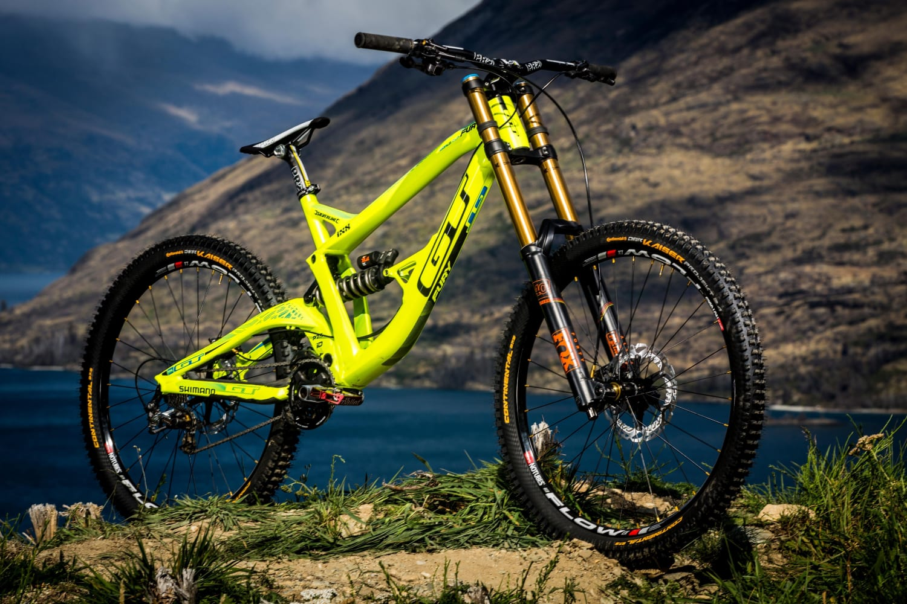
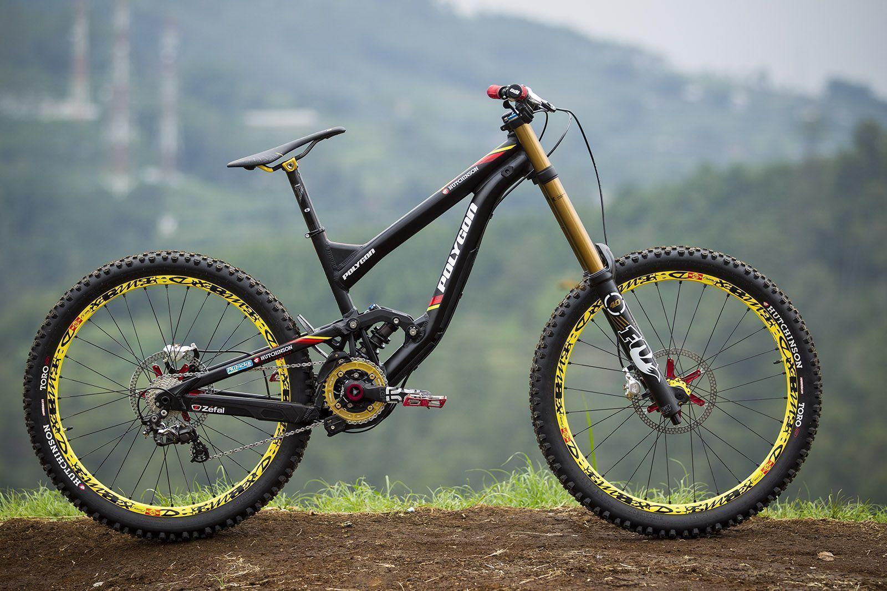
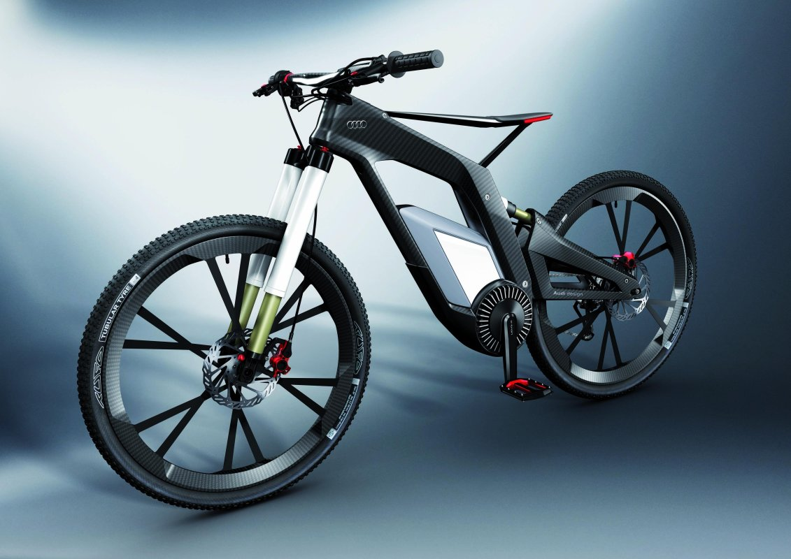

Велосипеды!
Велосипеды – это удивительное средство передвижения и спорта, сочетающее в себе практичность, здоровье и увлечение. Велосипед – не просто металлический каркас с двумя колесами, а своеобразный спутник, открывающий мир возможностей.На велосипеде можно прокатиться по улочкам города, ощущая свободу ветра в волосах, или же отправиться на приключение, преодолевая пересеченную местность в далеких природных ландшафтах.


